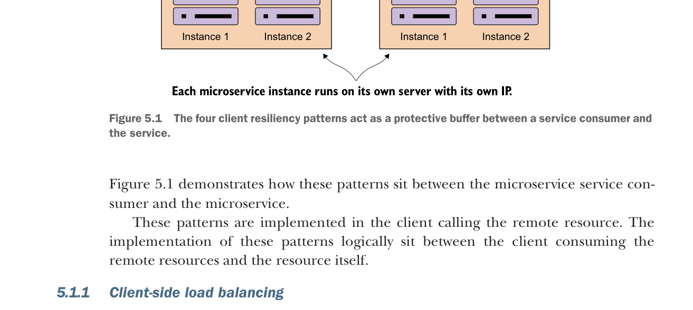

Bốn mẫu khả năng phục hồi phía client hoạt động như một lớp đệm bảo vệ giữa service consumer và dịch vụ.
Hình 5.1 minh họa cách các mẫu này nằm giữa service consumer microservice và microservice.
Các mẫu này được triển khai ở client gọi tới tài nguyên từ xa. Việc triển khai các mẫu này về mặt logic nằm giữa client tiêu thụ tài nguyên từ xa và chính tài nguyên đó.
5.1.1 Cân bằng tải phía client
Chúng ta đã giới thiệu mẫu cân bằng tải phía client ở chương trước (chương 4) khi nói về service discovery. Cân bằng tải phía client gồm việc để client tra cứu tất cả các instance riêng lẻ của một dịch vụ từ một service discovery agent (như Netflix Eureka), rồi cache vị trí vật lý của các service instance đó.